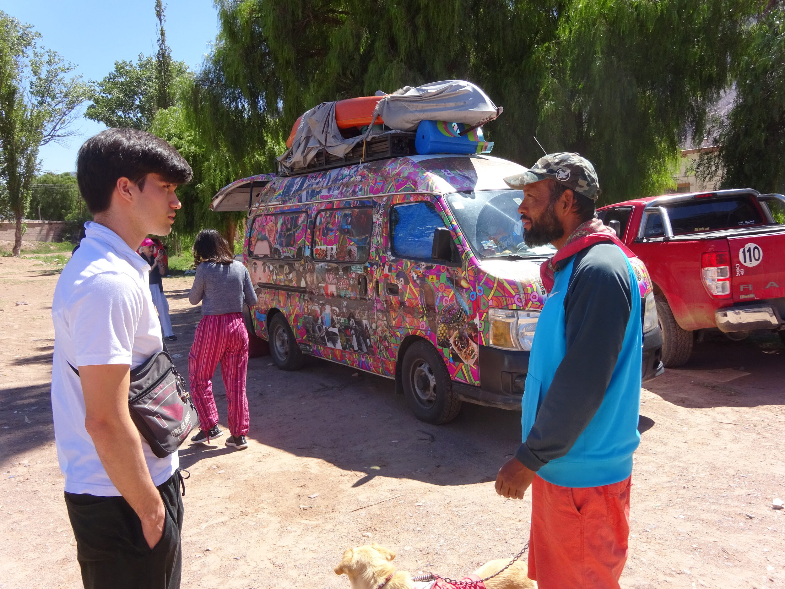
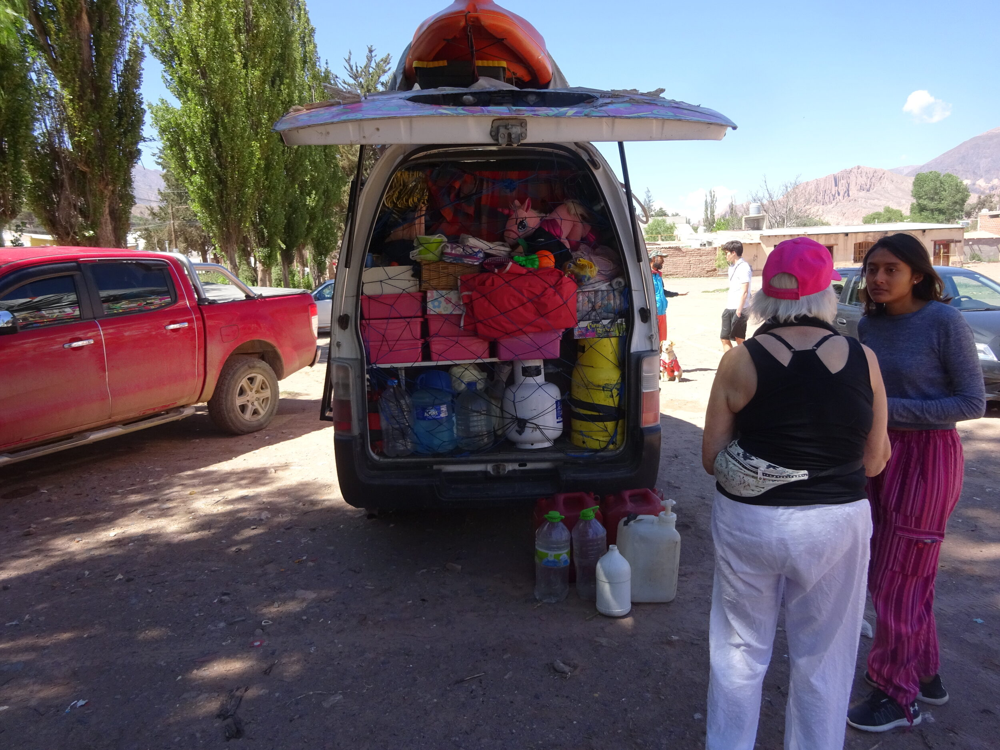
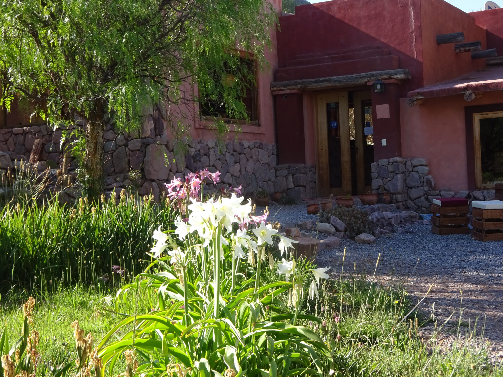

Gautam and Pelusa
Gautam and I met when we were grad students at Princeton. He's an environmental engineer. After school, he left for Upper Volta with folding mylar mirrors to boil water. Then the Philipines, and maybe some other stuff. In Mexico, he met his current wife, Pelusa (shaggy hair). They now live in Buenos Aires. For me, the purpose of the trip was to catch up.
I also brought along retired artist friend Sharon Roslund. She'd collected 14 suitcases of clothes to give to the poor. She'd made contacts in the Buenos Aires Self Realization Fellowship group, and they would do the distribution.
When I heard 14 suitcases, I said it was folly and ungraciously washed my hands of it. Sharon did all the logistics for getting them from here to there, and it worked like a charm.
We stayed in a vacant apartment that Gautam had bought during a previous currency crisis. It was in Villa Crespo, where the funky meets the hip. The parrot outside the windows was an unexpected plus.
The last pic is the estuary park where Gautam, Pelusa and I spent the afternoon catching up.
   |
   |
Sharon and I flew up to Salta in the foothills of the Andes, with Cristobal as a tour guide. Cristobal was an interesting guy. While modeling, he'd completed to BAs and was working on his third in civil engineering.
When we drove by this crew, Sharon had Cristobal hang a U and got out to talk to them. I talk to no one; it's embarrassing. Sharon talks to everyone, which stresses me out, but at times enriches my life.
With all their belongings in the van, they were half way though a trip from Mexico to Tierra del Fuego, promoting peace and borderlesness along the way. They had just come from Bolivia where "the people are friendly but the cops and soldiers will kill you". The crew was guy, wife, daughter, dog. You can see his wife doing the wash in a tiny bucket inside the van amid whatever belongings didn't fit in the back or on the roof.
The guy was a lawyer taking some time off.




The last one is downtown Salta.


The village of Purmamarca is 2 1/2 hours north of Salta. It's mostly a tourist stop, but worth visiting. Sharon got to pet a llama.
For the famous Seven Color Hill, I resorted to a stock photo because mine were so inadequate.
The bottom right pic is me with a wad of coca leaves. Last time I came through here, Gautam disuaded me from trying them, and I've regretted it ever since. I chewed some. The world seemed just a bit brighter and I felt jittery. Then I chewed more and more, and that was all I got. Not ready to plow a hot uphill field all afternoon. You must have to chew them continually to get the full effect.
Cristobal said he'd brought coca leaves into the US with no problem. The web says "illegal but tolerated". I didn't bring any home.
The last pic is a collection of herbal remedies found in a general store.


In Tilcara, we stayed in quaint woodsy cottages laid out on a (very) steep hill. Good way to get your heart rate up. Something they don't tell you in the ads: The road up there is a mile of dirt, rocks and ruts. In rain, it'd be unpassable without a Jeep. Wonder if anyone's ever gotten stranded.
Traces of human habitation go back 10,000 years. The Pucara was a fort created in the 12th century by the Omaguaca tribe as a military and administrative center. It covered 51 acres and housed 2,000 people living in square stone buildings with low doors and no windows (see middle pic).
Pucara is Quechua for "fortification".
The Omaguacas were conquered by the Incas, then the Spanish, who used it as a transit point for the silver mines of Potosi. Eventually, the site was abandoned and looted. The partial reconstruction was done in the 1950s.
